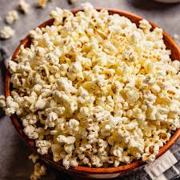

Popcorn

A lunch that is known to be perfect with a good movie
Ingredients
- 3 tablespoons coconut oil or extra virgin olive oil
- 1/3 cup high quality popcorn kernels
- 1 tablespoon butter or more to taste
- Salt
Preparation
- Heat the oil in a 3-quart thick-bottomed saucepan on medium high heat.
If you are using coconut oil, allow all of the solid oil to melt.
- Put 3 or 4 popcorn kernels into the oil and Wait for the popcorn kernels to pop.
- When the kernels pop, add the rest of the 1/3 cup of popcorn kernels in an even layer
- Cover the pot, remove from heat and count 30 seconds, waiting 30 seconds brings all of the
other kernels to a near-popping temperature so that when they are put back on the heat,
they all pop at about the same time
- Return the pan to the heat,Once the popping starts in earnest,
gently shake the pan by moving it back and forth over the burner
- Once the popping slows to several seconds between pops,
remove the pan from the heat and dump the popcorn immediately into a wide bowl
- Melt butter in the empty hot pan, after the butter melt drizzle the melted butter over the popcorn and toss to distribute
- Sprinkle the popcorn with salt to taste